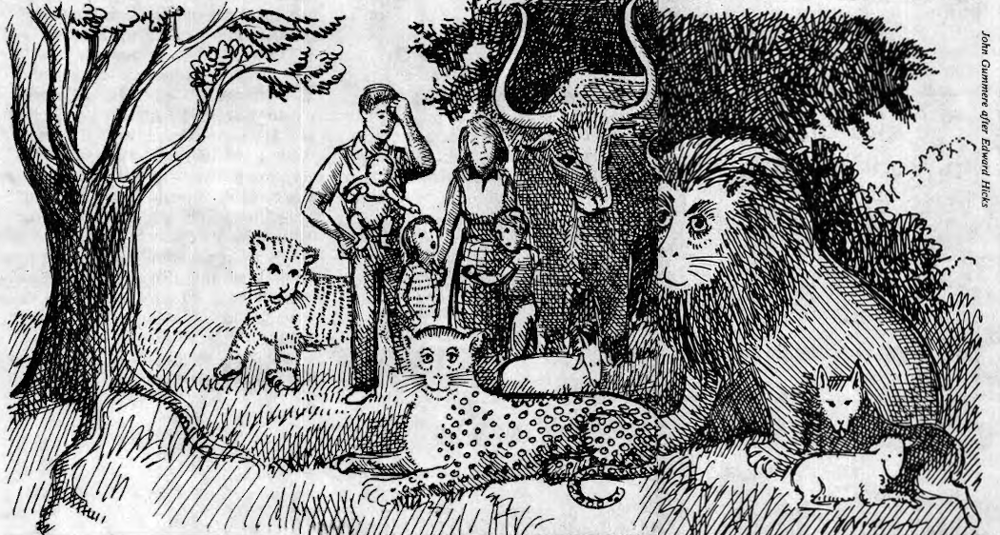

How Precious Is Our Testimony?
by Judy Brutz
The Peace Testimony has spoken to me about the sacredness of life and the imperative of responding to that sacredness in all life situations, including my interpersonal relations within my family. When I became a pacifist at the age of 16, it did not occur to me that the pacifist principles I accepted as guides for international conflicts were also appropriate guides for conflicts within the family. It took over two decades of living to have those kinds of insights, and I am still learning. Today I ask myself and other Friends, what does it mean to be a peacemaker? Is the Peace Testimony also relevant to the home? Have we truly arrived as a nonviolent people?
Out of my struggle over the years with the question of peacemaking and non-violence, I have had increasing concern for the family. During these years my meeting and yearly meeting have supported, encouraged, guided, and listened to me. Recently, the yearly meeting asked me to write down the religious concern from which my research among Friends is prompted. I searched the Peace Testimony and my heart and was able to put into words my own personal conviction:
In our Peace Testimony we affirm our faith and commit ourselves not to fight with outward weapons. Our faith and our commitment come from the inward experience of Christ's transforming power and love.
As we witness to the world that it is Christ's love, power, and truth which overcome human conflict in the world, we also witness that it is his love, power, and truth which overcome conflict within the family and which overcome the violence within our hearts.
Christ's truth is consistent over time. We are not led to be peacemakers in one situation and to be violent in the next. The Spirit lays upon us both the burden of being peacemakers in all life situations, and also provides the means to lighten the load. Within our strength and skills we often do not live up to the task set before us. We need to face the discrepancy between the statement of our beliefs and our words and action within the privacy of our homes. We need to learn how to accept and trust God's gracious changing in our lives.
Statement of Concern, Lake Erie Yearly Meeting, June 23, 1984
For me the Peace Testimony is a living testament that continues to give me vital messages. So clear has this message been to me that when I embarked on a search of Quaker literature on the Peace Testimony as part of my graduate work, I assumed that I would find at least a few writings on the meaning of the Peace Testimony within family life. I did not locate any such writings. During my search I noted that several Friends were concerned with family relations. The first Friends to write about various aspects of interpersonal relations within the family were Elise Boulding, Harold Loukes, Fortunato Castillo, and David and Vera Mace. During the 1970s concern for the family increased. The Maces' pioneering of marriage enrichment among Quakers has spread to other religions and other peoples while still remaining a strong resource available to us through Quaker auspices. New England Yearly Meeting has made an important contribution to the Society of Friends in Living With Oneself and Others, which gives queries and advices helpful to the examination of our family lives (see Resource section on page 12). The Quaker Project on Community Conflict, under the auspices of New York Yearly Meeting, gave birth to the Children's Creative Response to Conflict Program, which seems to have had its major impact in public and private schools. The Nonviolence and Children Program is an effort of Philadelphia Yearly Meeting that grew out of both a need for families to support one another in nurturing relations and from some involvement in reevaluation counseling.
Not finding writings that linked the Peace Testimony to relations within the home, I decided to extend the search to the queries and advices in the books of discipline of London and Philadelphia yearly meetings. Pulling off the shelves editions from earlier days of Friends and progressing into the present, I found nothing on this subject, with the single exception of the 1972 edition of Philadelphia Yearly Meeting's Faith and Practice, which specifically mentions nonviolence in the family in both a query and an advice.
My search for writings on the Peace Testimony came as a result of preparing to do the study on family conflict resolution in Lake Erie Yearly Meeting (LEYM). My being involved in such research had come unexpectedly, for I had been going in a different direction. While already nearing the completion of a master's thesis on strengthening families, I was unexpectedly thrust into the family violence literature. At that time there were only a few exploratory studies in existence. I, like many other persons, believed that violence in the family only occurred pathologically or was the result of being in certain socioeconomic groups. In addition to being distressed with the reality of family violence, I was deeply distressed when I came across a statement made by three different researchers that “nonviolence in the family is a myth.”
Their conclusion made sense: that family violence seemed to cut across all socioeconomic groups and was not necessarily the result of pathologies. How easy it would be to extend this logic and conclude falsely that nonviolence in the family is not possible.
I had a self-righteous attitude about myself and about the Society of Friends. I believed that because we have a commitment to peacemaking, that of course we would not have violence in our families, and, therefore, we could point to our families as being examples of how to live. The third time I came across the statement that "nonviolence in the family is a myth," I pushed myself away from the library table and said out loud, ‘What I really want to study is conflict resolution in Quaker families.” This was the beginning of the Lake Erie Yearly Meeting study.
By the time I was ready to do the research, the national study on family violence was completed by Strauss, Gelles, and Steinmetz, and so I was able to use their questionnaire on family violence. I expected to find higher rates of family violence in the national study compared to the rates I would find for families in Lake Erie Yearly Meeting. The initial findings from the LEYM study did not support my expectation that Friends would report less violence than families reported nationally. The master's thesis and an article published later reported the initial findings of the LEYM: Quaker families are no less violent than families nationwide.
The real value in research on family violence within the Society of Friends, such as the LEYM study, is the spiritual exercise that it prompts when each of us dares to ask, "Am I violent?" Consider these queries about family conflict resolution techniques, questions asked Friends in the initial study in Lake Erie Yearly Meeting:
In conflicts with any family member do you … insult or swear? sulk or refuse to talk? stomp out? do or say something to spite? threaten to throw something at the other person? throw something at the other person? slap the other person? do you kick, bite, or hit with your fist the other person? do you try to hit the other person with something? do you beat up the other person? do you threaten to use a gun or knife on the other person? do you use a gun or a knife on the other person?
I am continuing to analyze the LEYM data, and I am also pursuing a doctoral degree at Iowa State University to better equip myself to do further research. The LEYM research has helped me to focus on a broader research problem, the moral and spiritual developmental process of integrating pacifist principles. What is the process? How does the process influence family violence? How can individuals and families be helped in this process? The theoretical model for this research problem is still in its embryonic stage, but I hope to continue with its formulation and to be able to test it both within the Society of Friends and elsewhere.
